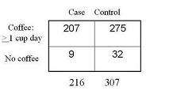
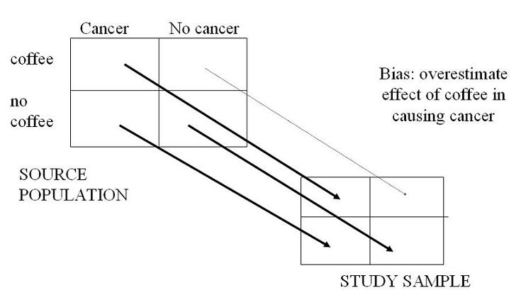
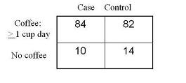

Example: Selection Bias - Pancreatic Cancer
Lead Author(s): Jeff Martin, MD
Bias in Analytic Study: Coffee and Pancreatic Cancer
Study 1: Biased - Overestimate of Exposure
MacMahon et al. N Eng J Med 1981
Cases: Patients with histologic diagnosis of pancreatic cancer in any of 11 large hospitals in Boston and Rhode Island between October 1974 and August 1979
The study base that gave rise to the cases is all persons, who would be diagnosed at one of these hospitals, if they had developed pancreatic cancer.
Controls: Patients under the care of the same physician of a case patient at the same time the case patient was diagnosed.
They excluded patients with diseases known to be associated with smoking or alcohol consumption.
The best approach might be the to limit the case group to persons who were were residents of the Boston/Rhode Island geographic area when they were diagnosed. Then assume that all pancreatic cancer gets diagnosed at hospitals in the region (this is likely a very reasonable assumption). Then, for controls, sample with a population-based sample of persons. This would be known as incidence density sampling in a free living population, or dynamic/open cohort.

OR = (207/9) / (275/32) =
The odds ratio is the exposure odds in the cases (207/9) divided by the exposure odds in the controls (275/32).
- The exposure odds said that the cases had a 2.7 fold greater odds of being coffee drinkers than non-cases.
- The exposure odds ratio is equal to the disease odds ratio, that is coffee drinkers have a 2.7 fold greater odds of pancreatic cancer than non-coffee drinkers.
Actual Controls
I think we believe that the actual study base is essentially the community because virtually all pancreatic cancer cases get diagnosed pre-mortem. That said, relative to the actual study base that gave rise to the case, let’s look at the controls that were used:
1): Other patients under the care of the same physician
(1) Other patients under the care of the same physician at the time of an interview with a patient with pancreatic cancer.
Most of the MDs were gastroenterologists whose other patients were enriched for having gastrointestinal diseases who were likely advised to stop using coffee - hence these are not representative of the study base.
2): Excluded patients with diseases associated with smoking or alcohol
(2) Patients with diseases known to be associated with smoking or alcohol consumption were excluded
Certainly the authors knew that smoking and alcohol use were correlated with coffee use and the reason they made this exclusion was because they felt that using other hospital patients would be too enriched for persons with smoking or alcohol use - their reaction to this possibility was to exclude them outright.
Conclusion
Conclusion: Relative to the actual base, the study sample is now relatively depleted of coffee users with this exclusion.There are many reasons to believe that this odds ratio is biased. There is now a bias away from the null or an overestimate of the odds ratio.

Here is what this selection bias looks like schematically.
- Coffee users in the control group are being under-sampled.
- The result of this is to overestimate the effect of coffee in pancreatic cancer.
Study 2: Unbiased - Use of Population Controls
Gold et al. Cancer 1985
Another set of investigators instead used population-based controls as obtained from random digit-dialing in the community. When doing so, the odds ratio was now roughly half what the first study showed and it was also compatible with a chance occurrence.

OR = (84/10) / (82/14) =
References
Gold, E. B., Gordis, L., Diener, M. D., Seltser, R., Boitnott, J. K., Bynum, T. E., et al. (1985). Diet and other risk factors for cancer of the pancreas. Cancer, 55 (2), 460-467.
MacMahon, B., Yen, S., Trichopoulos, D., Warren, K., & Nardi, G. (1981). Coffee and cancer of the pancreas. N Engl J Med, 304 (11), 630-633.